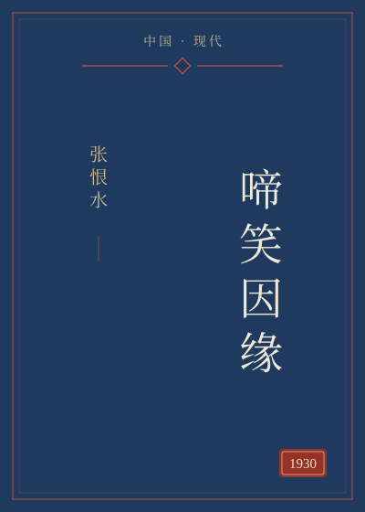
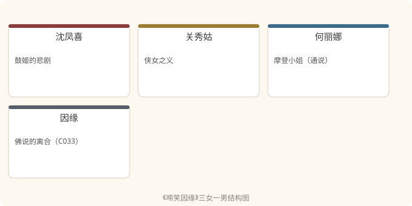

啼笑因缘
一、基本信息
| 作者 | 张恨水 |
|---|---|
| 成书/出版 | 1930年连载于上海《新闻报》副刊'快活林'，同年出版单行本（中华读书报 C033） 《啼笑因缘》的命名（中华读书报）（官方媒体） |
| 国别/地区 | 中国 |
| 时代 | 现当代 · 现代 |
| 体裁 | 长篇小说 |
| 语言 | 汉语（白话·章回体） |

《啼笑因缘》三女一男结构图（主题·结构图）
二、创作背景
中华读书报（C033）：'1930年，张恨水的长篇小说《啼笑因缘》连载于上海《新闻报》副刊快活林，同年又出版单行本'；'一时间家弦户诵，被誉为民国第一畅销小说'；'曾经近百次被改编为其他艺术形式'。
书名（C033）：张恨水1932年自述'盖弟以因缘二字，根于佛说，恐人写作姻缘，未免伤俗'——'啼、笑、恩、怨、亲、仇交织的离合'。
三、内容脉络
樊家树与鼓姬沈凤喜、侠女关秀姑、何丽娜的多角情缘（人物关系通说待核；C033 载越剧《樊家树与沈凤喜》）。
军阀势力拆散姻缘——凤喜的悲剧（通说待核）。
四、主要人物表
| 人物 | 身份 | 说明 |
|---|---|---|
| 樊家树 | 青年学生 | 平权婚恋观（通说待核） |
| 沈凤喜 | 鼓姬 | 被军阀夺走（通说待核） |
| 关秀姑 | 侠女 | 豪侠线（通说待核） |
五、主题与艺术特点
- 章回体与新媒载（报纸连载）的结合（C033）。
- '啼笑'的悲喜剧结构：啼笑因缘皆佛家'因缘'（C033）。
- 通俗文学的现代高峰（C033：近百次改编）。
六、影响与评论
- 中华读书报：'家弦户诵，被誉为民国第一畅销小说'；近百次改编（C033）。
《啼笑因缘》的命名（中华读书报）（官方媒体） - 中华读书报：初稿两名由严独鹤择定——报人与作家的协作机制（C033）。
《啼笑因缘》的命名（中华读书报）（官方媒体）
七、阅读建议
难点
- 章回套语与旧京风物。
- 通俗文学与'新文学'的价值等级（研究界再评价）。
- 《啼笑因缘》（人民文学出版社版本，通说待核）。
对照《骆驼祥子》：1930年代北平的两种书写。
八、待核实
- 二十二回回目核对。
- 樊家树/沈凤喜/关秀姑/何丽娜情节核对。
- 1931年电影版权纠纷（C033 搜索口径）待核。
本页主要来源
张恨水的其他收录作品：啼笑因缘